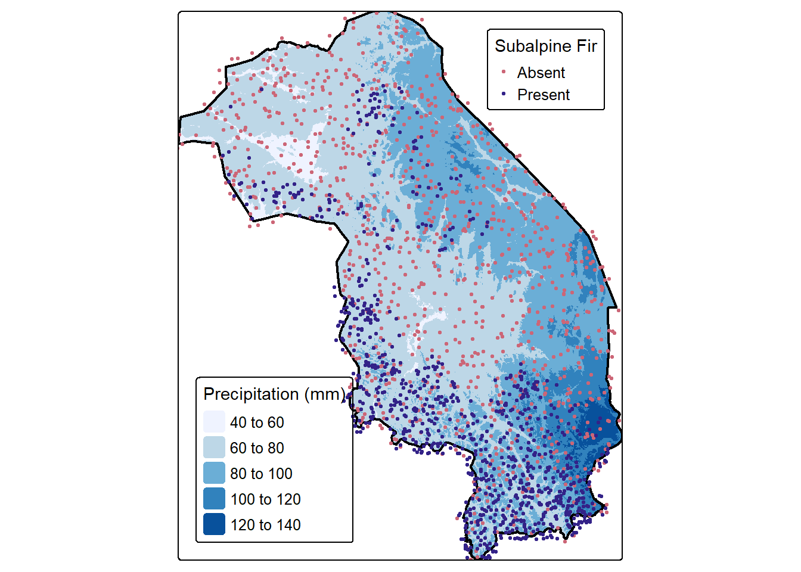
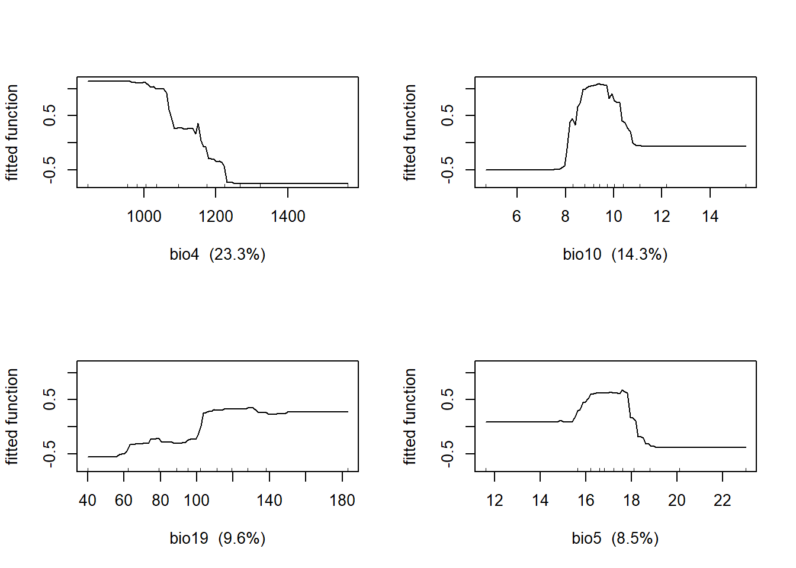
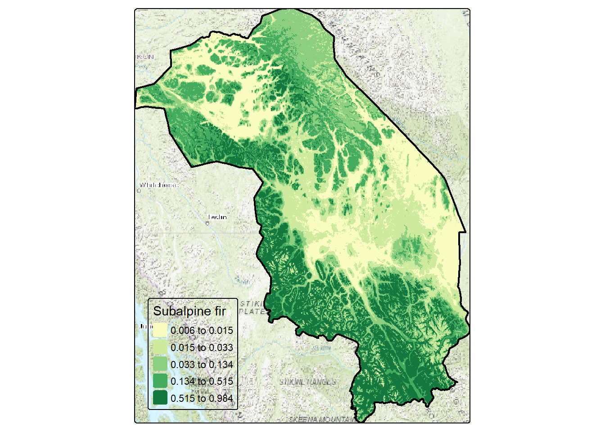
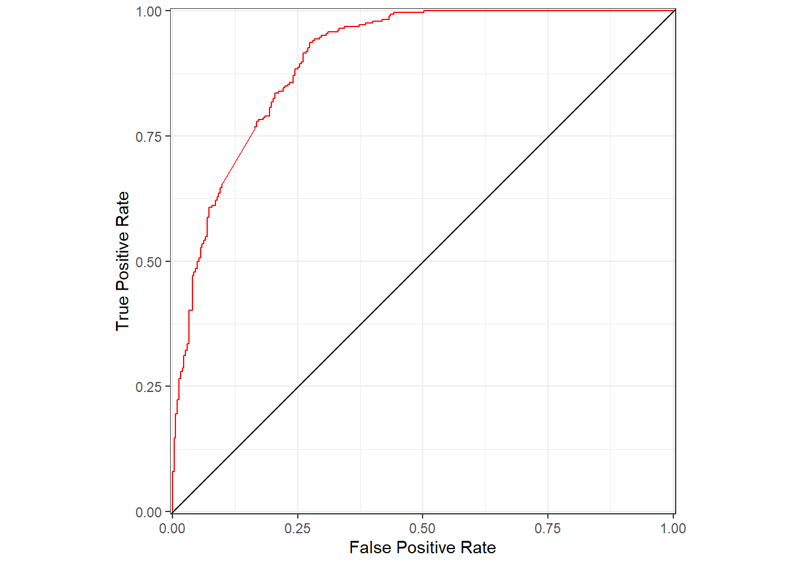
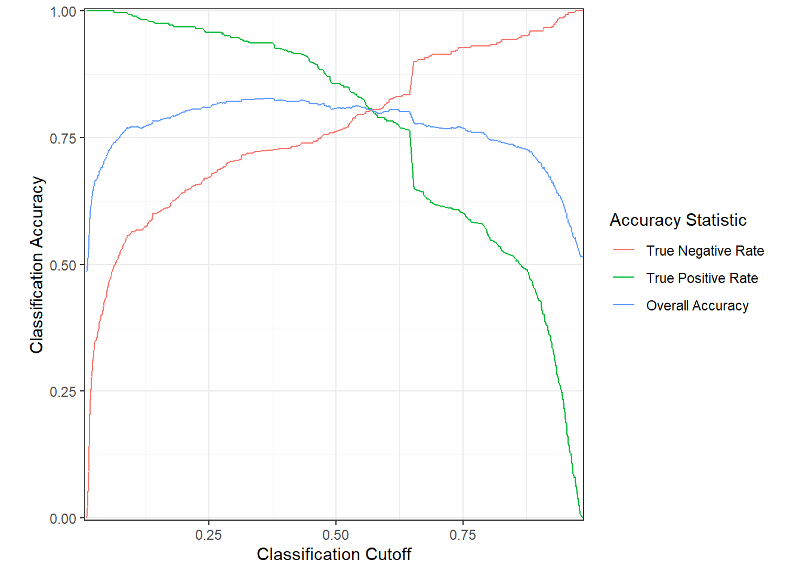
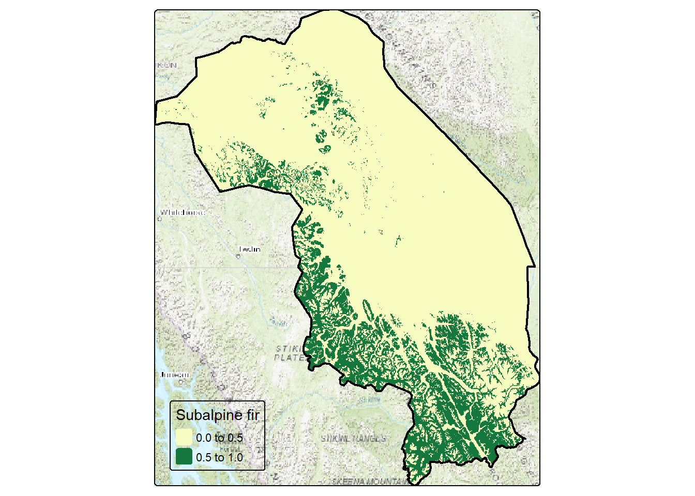

library(sf)
library(tmap)
library(ROCR)
library(dismo)
library(terra)
library(ggplot2)
library(tmaptools)
library(tidyverse)Subalpine fir distribution - Part 4
Pierre Vernier (2024-03-04)
Introduction
Objectives:
- Extract bioclimatic data using random subalpine fir location
- Model relationship between subalpine fir and bioclimatic variables
- Map predicted probability of occurrence of subalpine fir
- Evaluate the accuracy of the model
Methods
Load required libraries
Extract bioclimate data using points
We can now extract the bioclimate data using our random presence-absence points for subalpine fir. We first read the subalpine fir random presence/absence file that we created last time. We use that file to extract the 19 bioclimate variable values at each point. Finally, we merge them back to the points file.
bnd <- st_read('data/kdtt.gpkg', 'bnd', quiet=TRUE)
bio <- rast('data/bio.tif')
abla <- st_read('data/kdtt.gpkg', 'abla', quiet=TRUE) %>%
st_transform(4326)
abla_bio <- terra::extract(bio, abla) %>%
bind_cols(abla) %>%
mutate(PresenceAbsence=NULL) %>%
rename(abla=Occurrence) %>%
as.data.frame()
names(abla_bio) [1] "ID" "bio1" "bio10" "bio11" "bio12" "bio13" "bio14" "bio15" "bio16"
[10] "bio17" "bio18" "bio19" "bio2" "bio3" "bio4" "bio5" "bio6" "bio7"
[19] "bio8" "bio9" "abla" "geom" head(abla_bio) ID bio1 bio10 bio11 bio12 bio13 bio14 bio15 bio16 bio17
1 1 -1.9625000 13.833333 -19.31667 497 95 18 59.72225 236 58
2 2 -2.3541667 10.900000 -16.20000 529 87 21 44.35683 219 70
3 3 -2.2750001 12.950000 -19.73333 453 67 18 37.28563 173 64
4 4 -5.7375002 8.599999 -18.68333 368 69 14 54.75156 168 47
5 5 -0.4041666 12.183333 -14.05000 490 67 13 36.72025 174 60
6 6 -3.0874999 13.316667 -21.28333 481 78 21 42.57211 198 69
bio18 bio19 bio2 bio3 bio4 bio5 bio6 bio7 bio8 bio9
1 236 65 11.37500 23.84696 1361.710 21.4 -26.3 47.7 13.833333 -9.216666
2 219 100 11.67500 27.79762 1110.580 18.4 -23.6 42.0 10.900000 -8.283334
3 173 92 12.03333 24.65847 1338.555 20.9 -27.9 48.8 12.950000 -8.433333
4 168 55 11.47500 26.87354 1132.038 16.3 -26.4 42.7 8.599999 -12.183333
5 174 123 11.35833 27.70325 1067.747 19.6 -21.4 41.0 12.183333 -5.616667
6 198 86 12.25833 23.89539 1419.160 21.7 -29.6 51.3 13.316667 -9.750000
abla geom
1 0 POINT (-124.4427 60.07953)
2 0 POINT (-126.4029 59.11991)
3 0 POINT (-127.2625 59.829)
4 0 POINT (-132.6516 62.73448)
5 0 POINT (-126.226 57.62838)
6 0 POINT (-126.0417 60.4285)#tm_basemap(server = c("Esri.WorldTopoMap")) +
tm_shape(bio[["bio13"]]) + tm_raster(col.scale=tm_scale_intervals(n=5, style="pretty", values="Blues"),
col.legend = tm_legend(title = "Precipitation (mm)", position = tm_pos_in("left", "bottom")),
col_alpha=1) +
tm_shape(bnd) + tm_polygons(fill_alpha=0, col="black", lwd=2) +
tm_shape(abla) + tm_dots(fill='PresenceAbsence', size=0.2,
fill.legend = tm_legend(title = "Subalpine Fir", position = tm_pos_in("right", "top"))) +
tm_layout(legend.text.size = 0.8)
Split sample into training and testing
Prior to developing a model, we split the data into a training (70%) and testing set (30%). Other splits or even multiple splits can be used. Next week we will use the training set to develop a simple model predicting subalpine fir occurrence. We will then use the holdout data or testing set to assess the predictive accuracy of the model.
set.seed(123)
abla_train <- abla_bio %>%
sample_frac(size = 0.7)
cat("Training data (70%):\n")Training data (70%):table(abla_train$abla)
0 1
697 679 abla_val <- abla_bio %>%
anti_join(abla_train, by = "ID")
cat("\n\nTesting data (30%):\n")
Testing data (30%):table(abla_val$abla)
0 1
303 286 Boosted regression tree
Now, we’re going to use our training data to develop a boosted regression tree model. You can easily find details about this type of model online and, eventually, in the resources pages of this coding website. The model will attempt to predict the probability of occurrence of subalpine fir as a function of one or more bioclimatic variable.
abla_mod <- gbm.step(data = abla_train, # data used to train model
gbm.x = 2:20, # predictor variables
gbm.y = 21, # response variable
family = "bernoulli", # bernoulli is appropriate for occurrence data
tree.complexity = 3,
learning.rate = 0.01,
bag.fraction = 0.5,
plot.main = FALSE,
verbose = FALSE,
silent = TRUE)
abla_imp <- summary(abla_mod, plotit = FALSE)
cat('Relative importance of bioclimatic variables:\n')Relative importance of bioclimatic variables:abla_imp var rel.inf
bio4 bio4 23.2552338
bio10 bio10 14.3337320
bio19 bio19 9.6204212
bio5 bio5 8.5497714
bio7 bio7 8.0851729
bio8 bio8 6.0617364
bio3 bio3 5.6685015
bio1 bio1 4.3731843
bio11 bio11 3.3802936
bio9 bio9 3.0075784
bio17 bio17 2.5793392
bio15 bio15 2.2871328
bio2 bio2 2.0880090
bio6 bio6 1.9255562
bio14 bio14 1.4066853
bio18 bio18 1.0118866
bio12 bio12 0.9774735
bio16 bio16 0.7073482
bio13 bio13 0.6809438Top four variables:
- bio4 - Temperature Seasonality (CV) i.e., the amount of temperature variation over a given period based on the ratio of the standard deviation of the monthly mean temperatures to the mean monthly temperature. The larger the standard deviation, the greater the variability of temperature.
- bio10 - Mean Temperature of Warmest Quarter
- bio19 - Precipitation of Coldest Quarter
- bio5 - Max Temperature of Warmest Month
Diagnostic plot
Partial residual plots show the nonparametric relationships between subalpine fir occurrence and the predictor variables. They can be generated using the gbm.plot() function from the dismo package. Here, the partial plots for the four most important predictors are shown in a 2 x 2 layout.
Over the range of temperatures in the study area, subalpine fir probability of occurrence:
- is highest at lowest temperature seasonality and declines monotonically when CV>1100 (bio4)
- is highest when mean temperature of the warmest quarter is between 8-11 degrees (bio10)
- is highest when precipitation in the coldest quarter is greater than 100 cm (bio19)
- is highest when mean temperature during the driest quarter is between 16-18 degrees (bio9)
gbm.plot(abla_mod,
n.plots = 4,
write.title = FALSE,
plot.layout = c(2, 2))
Predict values at all pixels
We can now use our model to predict the probability of occurrence of subalpine fir at all locations in our study area using the predict function in the dismo package.
abla_cur <- predict(object = bio, # bioclimatic variables
model = abla_mod, # model
type = "response",
na.rm = TRUE)Predicted probability map
We can now map the predicted probability of occurrence of subalpine fir across our study area.
pal <- get_brewer_pal("YlGn", n=5, plot=FALSE)
tm_basemap(server = c("Esri.WorldTopoMap")) +
tm_shape(abla_cur) + tm_raster(col.scale=tm_scale_intervals(n=5, style="quantile", values=pal),
col.legend = tm_legend(title = "Subalpine fir", position = tm_pos_in("left", "bottom")),
col_alpha=1) +
tm_shape(bnd) + tm_polygons(fill_alpha=0, col="black", lwd=2)
Predicted probability map with subalpine fir
Now, let’s see the map with the subalpine fir presence-absence data.
pal <- get_brewer_pal("YlGn", n=5, plot=FALSE)
tm_basemap(server = c("Esri.WorldTopoMap")) +
tm_shape(abla_cur) + tm_raster(col.scale=tm_scale_intervals(n=5, style="quantile", values=pal),
col.legend = tm_legend(title = "Subalpine fir", position = tm_pos_in("left", "bottom")),
col_alpha=1) +
tm_shape(bnd) + tm_polygons(fill_alpha=0, col="black", lwd=2) +
tm_shape(abla) + tm_dots(fill='PresenceAbsence', size=0.2,
fill.legend = tm_legend(title = "Subalpine Fir", position = tm_pos_in("right", "top"))) +
tm_layout(legend.text.size = 0.8)
We can clearly see that most of the absences are located in areas with lower predicted probability of occurrences, while most the presences are in the greener areas.
Accuracy Assessment
An important step in statistical modelling is to evaluate the accuracy of the models. Ideally, we would use spatially and temporally independent data. However, this is rarely possible or affordable. Instead, we can use our hold-out or testing dataset to evaluate the predictive accuracy of our model. The code below creates a data frame from the observed and predicted data that will be used to calculate and plot a measure of predicted accuracy known as the Area under the receiver operating characteristics (ROC) curve. We can ignore the code for now.
abla_pred <- predict(abla_mod,
newdata = abla_val,
type = "response")
abla_predobs <- prediction(abla_pred, abla_val$abla)
abla_roc = performance(abla_predobs,
measure = "tpr",
x.measure = "fpr")
abla_fpr <- slot(abla_roc, "x.values")[[1]]
abla_tpr <- slot(abla_roc, "y.values")[[1]]
abla_aucplot <- data.frame(abla_fpr, abla_tpr)Area under the receiver operating characteristics (ROC) curve
Area under the receiver operating characteristics (ROC) curve for predictions of subalpine fir occurrence based on WorldClim bioclimatic indices. We now use the table of observed and predicted observations to plot the ROC curve. If our model had no predictive capability, the curve would be a diagonal straight line. Curves that increasingly concave indicate higher accuracy.
ggplot(data = abla_aucplot) +
geom_line(aes(x = abla_fpr,
y = abla_tpr),
col = "red") +
labs(x = "False Positive Rate",
y = "True Positive Rate") +
geom_abline(slope = 1, intercept = 0) +
scale_x_continuous(expand = c(0.005, 0)) +
scale_y_continuous(expand = c(0.005, 0)) +
coord_fixed() +
theme_bw()
ROC value
Values for the ROC curve range from 0 to 1, with values of 1 indicating perfect accuracy. Values of 0.5 indicate a random model, no better than the mean value of the occurrence data.
abla_aucval <- performance(abla_predobs, measure = "auc")
slot(abla_aucval, "y.values")[[1]][1] 0.9031249Other accuracy measures (optional)
Several other accuracy measures can be used, including overall accuracy, true positive rate, and true negative rate and are shown in the graph. These can be calculated using the performance function. We won’t go into these other than to mention that we can use the results to suggest a cutoff value that would be effective for classifying presence or absence based on the predictions. For example, based on these plots, we could use a cutoff value around 0.56.
abla_all = performance(abla_predobs,
measure = "acc")
abla_pos = performance(abla_predobs,
measure = "tpr")
abla_neg = performance(abla_predobs,
measure = "tnr")
cutoff <- slot(abla_all, "x.values")[[1]]
totacc <- slot(abla_all, "y.values")[[1]]
posacc <- slot(abla_pos, "y.values")[[1]]
negacc <- slot(abla_neg, "y.values")[[1]]
abla_accplot <- data.frame(cutoff,
totacc,
posacc,
negacc) %>%
pivot_longer(cols = one_of("totacc",
"posacc",
"negacc"),
values_to = "accval",
names_to = "accstat")
ggplot(data = abla_accplot) +
geom_line(aes(x = cutoff,
y = accval,
col = accstat)) +
labs(x = "Classification Cutoff",
y = "Classification Accuracy",
color = "Accuracy Statistic") +
scale_color_discrete(labels = c("True Negative Rate",
"True Positive Rate",
"Overall Accuracy")) +
scale_x_continuous(expand = c(0.005, 0)) +
scale_y_continuous(expand = c(0.005, 0)) +
coord_fixed() +
theme_bw()
Predicted occurrence
We can now use the cutoff value to reclassify our predicted probability of occurrence map into a presence/absence map. To do this we will first create a classification matrix and then use the classify function from the terra package.
m <- c(0, 0.56, 0,
0.56, 1, 1)
rclmat <- matrix(m, ncol=3, byrow=TRUE)
abla_cur_01 <- classify(abla_cur, rclmat)And here is the predicted presence/absence map, which provides us with an idea of the current range of subalpine fir.
pal <- get_brewer_pal("YlGn", n=5, plot=FALSE)
tm_basemap(server = c("Esri.WorldTopoMap")) +
tm_shape(abla_cur_01) + tm_raster(col.scale=tm_scale_intervals(n=2, values=pal),
col.legend = tm_legend(title = "Subalpine fir", position = tm_pos_in("left", "bottom")),
col_alpha=1) +
tm_shape(bnd) + tm_polygons(fill_alpha=0, col="black", lwd=2)
Next week: looking into the future
Next week, we will download projected bioclimatic data and use our model to project the future range of subalpine fir under climate change. We will then compare the areal extent of the current and projected distributions to determine if and how subalpine fir distribution is predicted to change.